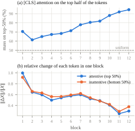
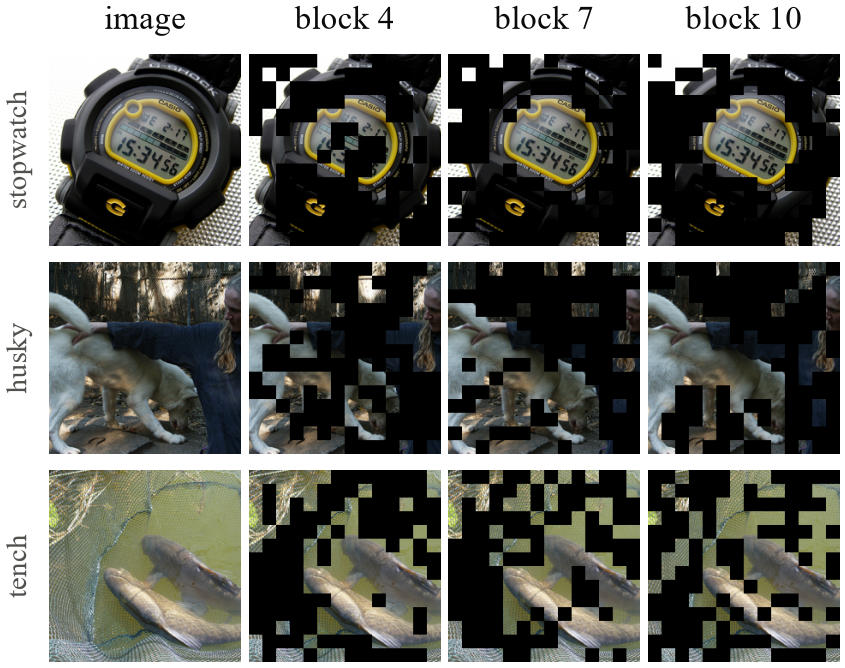
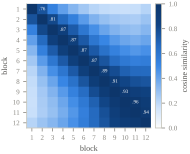
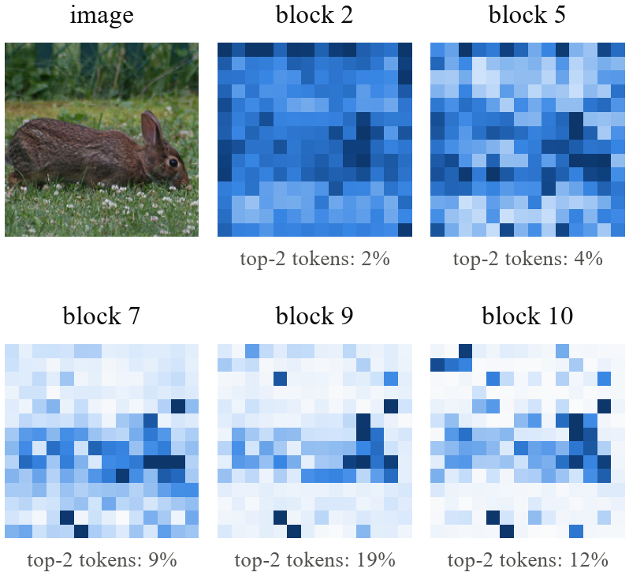
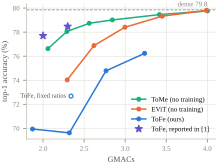
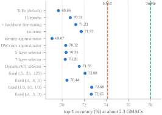
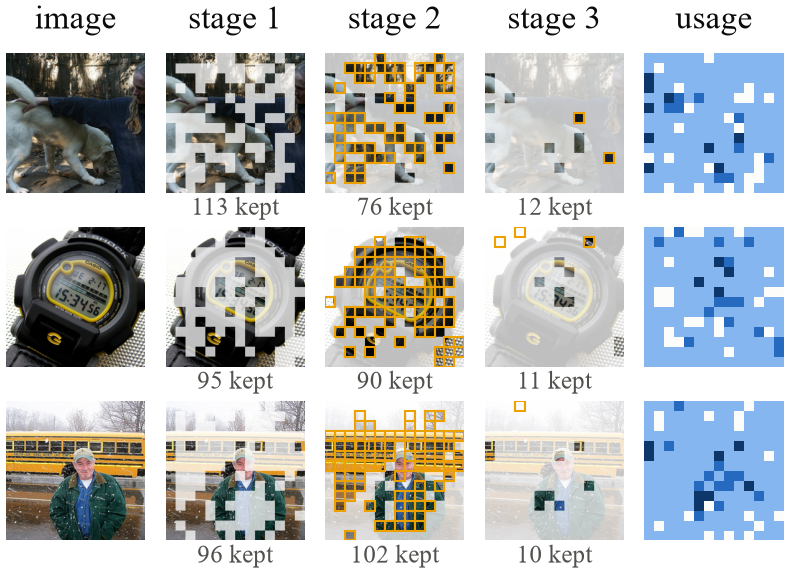

Introduction
A vision transformer cuts an image into patches and treats each patch as a token. DeiT-S [2], for example, processes 196 patch tokens and one [CLS] token in each of its 12 blocks. The cost of a block grows with the number of tokens, so a common way to speed up a ViT is to use fewer tokens in the later blocks. Pruning methods such as EViT [3] and DynamicViT [5] drop the unimportant tokens, and merging methods such as ToMe [4] average similar tokens. In both cases the decision is final: a removed token never comes back.
ToFe [1] argues that this is a mistake. Most methods use the attention of the [CLS] token to decide which tokens are important, but this attention is spread out and unreliable in the early blocks. A token that looks unimportant in block 4 can become important in block 10. ToFe therefore freezes such tokens instead of removing them: they skip some blocks, a small network updates them, and they can be used again in a later stage.
This report makes four contributions:
- A from-scratch PyTorch implementation of ToFe and of two baselines (EViT and ToMe), with unit tests.
- A check of the four observations that motivate ToFe, on DeiT-S.
- The main comparison and the ablations of Tables IV–VIII and X of [1], all on the full ImageNet validation set.
- An analysis of why my results differ from the paper.
ToFe in Short
Cost model
The paper counts the cost of one block that processes n tokens of width D as
where Dh = 4D is the MLP width. For DeiT-S (D = 384, 12 blocks, n = 197) this gives 4.6 G multiply–accumulate operations (GMACs), which papers usually call “4.6 GFLOPs”.
Freezing and reusing
ToFe has three stages that start before blocks 4, 7 and 10. At the start of each stage:
- A token selector, a 3-layer MLP, looks at every patch token and outputs keep/freeze scores. A Gumbel-Softmax turns the scores into a binary mask.
- The kept tokens and the [CLS] token go through the blocks of the stage.
- The frozen tokens skip these blocks. A token approximator, a small 2-layer MLP, updates them as x + A(x) to guess how they would have changed.
- Both groups are put back in the original order. The selector of the next stage sees all tokens again, so a frozen token can be reused.
Training and inference
During training all tokens stay in the tensor, and an attention mask hides the frozen tokens from the others (Eqs. 16–18 of [1]). The loss is
Here Lapr pulls the approximated tokens towards the outputs of the original model, and LFLOPs is the squared difference between the cost of each image, from (1), and the target budget. The network therefore learns by itself how many tokens to keep in each stage. At test time there are two modes. In batch-adaptive mode, every image keeps the same number of tokens per stage: the average number seen during training. In instance-adaptive mode, every image decides its own number, which needs batch size 1.
Implementation
I used Python 3.13, PyTorch 2.11 and the pretrained DeiT-S weights of timm 1.0.30. Everything else was written for this project. The code, all result files and the trained models are available online [9]. The main file, tofe.py, has two forward passes. The training pass uses the masked attention of [1]. The inference pass really removes the frozen tokens from the computation, so it gives a real speed-up. I tested the code with four checks:
- When all tokens are kept, both passes give the same output as DeiT-S (difference about 10−6).
- For the same keep/freeze decisions, the two passes give the same output.
- Without reuse, the tokens kept in a stage are a subset of those kept in the previous stage.
- EViT and ToMe give the DeiT-S output when nothing is removed.
The paper leaves some details open. Table I lists my choices. Two of them are worth explaining. First, I set the hidden size of the approximator to D/2 because this gives exactly the “2.52% of the FLOPs” reported in Table VI of [1]. Second, I set λFLOPs = 50 instead of 5: the paper does not give the unit of the FLOPs loss, and with 5 my models used 0.2 GMACs more than the budget. As baselines, I applied EViT and ToMe to the same frozen DeiT-S without any training. I also added random token pruning as a sanity check.
Experimental Setup
Data: I downloaded ImageNet-1k from Hugging Face. All results use the full validation set of 50,000 images. For training I used 30 of the 294 training files: 130,740 images, about 131 per class (10.2% of the training set).
Training: Each ToFe model is trained for 5 epochs with the backbone frozen. One run takes about 20 minutes on a single RTX 5070 GPU (12 GB). The paper trains for 30 epochs on the full training set and fine-tunes the backbone for 25 of them, which is 38.4 M training samples. My default runs see 0.65 M samples, 59 times fewer. Section V-D tests what more training changes.
Metrics: I report top-1 accuracy, cost in GMACs from (1), and throughput (images per second, batch 128, bf16). As a check, (1) gives 4.599 GMACs for DeiT-S and the fvcore operator counter gives 4.608.
A lesson from the first test: My first quick test trained ToFe on Imagenette and Imagewoof, two 10-class subsets of ImageNet. ToFe then beat the full DeiT-S model by 8 points (95.4% vs. 87.2%), which is impossible. The small networks had learned to push the 1000-class head towards the 20 training classes. For this reason all reported results use the 1000-class data.
Results
The baselines match the paper
DeiT-S reaches 79.85% top-1 and 95.06% top-5 accuracy (paper: 79.9% and 95.0%). ToMe with r = 18 reaches 76.63% at 2.06 GMACs, almost the same as the paper's ToMe result (76.5% at 2.0 G). So my data, model and cost counting agree with the paper.
The motivation of ToFe
Table II checks the four observations that motivate ToFe, using 5,000 validation images.
The first three hold. In the early blocks, the [CLS] attention is spread over many tokens: the top half of the tokens gets only 61–68% of it, compared with 88–94% in the last blocks (Fig. 1a). As a result, keeping the top 50% at block 4 would remove 35% of the tokens that are most important at block 10 (Fig. 2). Neighbouring blocks also produce similar features (Fig. 3).
The fourth one does not hold. The paper says that unimportant (“inattentive”) tokens change little over several blocks, so a small network can approximate them. In my measurements they change as much as the important tokens (Fig. 1b). Over the three blocks of stage 1, their change is 1.32 times their own size, while their direction rotates (cosine 0.56) and their length grows by a factor of 1.55. A small MLP that sees one token at a time cannot predict such a change. Fig. 4 shows one more problem: in the deep blocks a few background tokens take 9–19% of the [CLS] attention. This “attention sink” effect [7] makes [CLS] attention an even worse importance score.
Main result at 50% of the FLOPs
Table III and Fig. 5 show the main comparison. ToFe reaches 69.66% at 2.32 GMACs (two seeds: 69.63% and 69.69%). This is 10.2 points below DeiT-S, while the paper reports a drop of only 2.2 points. ToFe is also below ToMe (78.06%) and EViT (74.13%) at the same cost, although these two methods are not trained at all. It is only 1.5 points better than keeping random tokens (68.20%).





Other budgets give the same picture (Table IV): at every budget from 40% to 70%, ToFe is below both baselines. The learned split of tokens between the stages is also strange. At 60%, the model keeps all 196 tokens in stage 2. At 70%, it keeps all of them in stage 1. Stage 3 always gets very few tokens (13–23).
Is it only a matter of more training?
My models see far less data than the paper's, so I tested two longer schedules (Table V). Training three times longer improves ToFe by only 1.1 points. Fine-tuning the backbone for three more epochs, as the paper does after its frozen phase, improves it by 1.6 points, while the training loss drops from 0.85 to 0.60. Both results are still far below the paper and below the training-free baselines.
Ablation studies
Table VI and Fig. 6 repeat the ablations of [1]. All runs use the same budget (about 2.3 GMACs) and 5 epochs. Where I ran two seeds, the two results differ by only about 0.1–0.2 points, so differences of 0.5 points or more are meaningful.

Token reusing (reversed): Training ToFe without reuse, so that a frozen token stays frozen, gives 2.1 points higher accuracy (71.73% vs. 69.66%, two seeds each). The paper reports the opposite (+2.7 points for reuse). I also switched reuse off at test time for already trained models (Table VII). At the token numbers of the paper this improves accuracy by 8–11 points for all three models.
Approximator (partly confirmed): The MLP approximator is 0.6 points better than plain reuse (identity), as in the paper. However, a depth-wise convolution works slightly better than the MLP. With a full transformer block as approximator, training goes wrong: the model keeps no tokens in stages 1 and 2 and lets the two new blocks do all the work, which gives only 47.5%.
Learned budget vs. fixed ratios (reversed): All four fixed keep ratios from the paper beat the learned budget (70.44–72.68% vs. 69.66%). The equal split (1/3, 1/3, 1/3), which is the worst one in the paper, is the best one here. It gives stage 3 more tokens, which the learned budget does not do.
Selector (partly confirmed): Deeper MLP selectors change the result by less than one point, as the paper says. However, the selector of DynamicViT, which also looks at the average of all tokens, is 1.9 points better than the proposed MLP. The paper finds it 4.1 points worse.
Why does ToFe not work here?
Table VIII and Fig. 7 look inside the trained model. Three findings explain the results above:
- Frozen tokens are not approximated well. Compared with the output of the original model, frozen tokens have an error of 0.82 of their size with plain reuse and 0.72 with the approximator. The approximator removes only a small part of the error, so reused tokens are wrong.
- The selector “refreshes” tokens. 81.5% of the tokens kept in stage 2 were frozen in stage 1 (paper: 10.9%). In Fig. 7, stage 2 keeps almost exactly the tokens that stage 1 froze. The model sends tokens around the blocks in turns instead of keeping the important ones.
- The kept tokens are not the important ones. They carry only 48% of the [CLS] attention in stage 2 (paper: 91%). When used for plain pruning, the selector score is even worse than [CLS] attention (70.7% vs. 71.9%).

Inference modes and speed
Table IX compares the two inference modes and the speed. In batch-adaptive mode the accuracy is exactly the same for every batch size. This is expected, because each image keeps its own top tokens. The paper's Table VIII, however, shows small changes with batch size. Instance-adaptive mode is 1.4 points better, which agrees with the paper. At batch 128, ToFe is 71% faster than DeiT-S. At batch size 1, the setting that instance-adaptive mode is meant for, ToFe is slower than DeiT-S (4.4 ms vs. 2.9 ms): the selectors, sorting and gathering cost more time than the saved computation. The paper does not report latency.
Inconsistencies in the Paper
- Two DeiT-S results: Table I gives 2.0 GFLOPs, 22.3 M parameters and 77.7%. Tables IV, VI and VII, which describe the same 50% setting, give 2.3 GFLOPs, 22.1 M and 78.48%. By (1), the reported keep ratios cost 2.20 GMACs, which matches neither.
- Speed-up: Table I lists 5477.3 img/s against 2383.9 img/s as “+108.5%”, but the ratio is +129.8%; 108.5% is the value of the DeiT-B row.
- Eq. (10): Nbs = ΣiMi,bs is called the number of frozen tokens, but M = 1 marks kept tokens.
- Eqs. (8)–(9) apply Gumbel-Softmax to probabilities instead of logits. Taken literally, the masks become almost random.
- Table VIII shows batch-adaptive accuracy changing with batch size, which the method as described cannot do.
I also made one mistake worth sharing. My first inference code ranked tokens by bf16 probabilities, which become exactly equal (ties) when they saturate. One model dropped from 57.0% to 38.3% because of this. Ranking by fp32 logits fixed it, and I re-evaluated all models; the others changed by at most 0.05 points.
Discussion and Limitations
The measurement side of the paper is correct. The baseline numbers, the cost model and the observation that early [CLS] attention is unreliable could all be reproduced. The practical parts also work: the learned selector with batch-adaptive inference gives a real speed-up, and instance-adaptive inference uses fewer tokens for easy images. The central idea, however, did not work in my setting. Freezing tokens and reusing them through a small approximator lowered accuracy in every controlled test. The reason is that the “inattentive tokens change little” assumption is wrong for DeiT-S, so reused tokens are inaccurate, and the model then learns to refresh tokens instead of choosing important ones.
The main limitation is the training budget: 59 times less training than the paper, with a frozen backbone in most runs. The paper's numbers may still hold at full scale, and I cannot rule this out. Two results suggest that more training alone would not be enough: three times longer training and backbone fine-tuning helped by only 1–1.6 points, and the training-free baselines were still 4.5–8.4 points better. Other limitations are the single backbone (DeiT-S), mostly single seeds, and baselines that I implemented myself instead of the official code.
Conclusion
In this project I implemented ToFe from the paper text, without the authors' code, and tested its claims on DeiT-S. I used the full ImageNet validation set for testing and about 10% of the training set for training. In total I trained 20 models and compared them with EViT, ToMe and random token pruning at the same cost.
The parts of the paper that do not need training were reproduced well. My DeiT-S and ToMe results are very close to the numbers in the paper (79.85% vs. 79.9% and 76.6% vs. 76.5%), and the cost model in (1) gives the same 4.6 GMACs. Three of the four observations behind ToFe also hold: the [CLS] attention is spread out in the early blocks, the important tokens change from block to block, and neighbouring blocks produce similar features. The two inference modes behave as described, and ToFe gives a real speed-up of 71% at batch size 128.
The main accuracy result was not reproduced. At 50% of the FLOPs, ToFe reached 69.7%, while the paper reports 77.7%, and simple methods without any training did better (ToMe 78.1%, EViT 74.1%). Three ablation results came out in the opposite direction: ToFe was better without token reusing (+2.1 points), with fixed keep ratios instead of the learned budget (up to +3.0 points), and with the DynamicViT selector instead of the proposed MLP (+1.9 points).
The analysis points to one main cause. The paper assumes that unimportant tokens change little, so that a small MLP can update them. In DeiT-S this is not true: over three blocks these tokens change by more than their own size. The approximator removes only a small part of this error, so the reused tokens are wrong. The model then learns to refresh tokens in turns instead of keeping the important ones, and the tokens it keeps carry only about half of the [CLS] attention.
My training budget was about 59 times smaller than in the paper, so the reported results may still hold with full training. However, three times longer training and backbone fine-tuning improved ToFe by only 1 to 1.6 points, which suggests that more training alone would not close the gap. Useful next steps are to train on the full ImageNet with a fine-tuned backbone, to test LV-ViT as in the paper, and to give the selector and the approximator access to the other tokens, for example through a global feature or a light attention layer. Fixed keep ratios with more tokens in the last stage turned out to be a simple and strong choice, and future work should also compare against them.
Appendix: How to Reproduce
The source code, the result files and the trained models are available in the project repository [9]. The steps are: download and prepare the data (download_imagenet.sh, prepare_imagenet.py, resize_train.py, cache_val.py); run the tests (test_tofe.py); run the motivation study and baselines (motivation.py, eval_baselines.py); train ToFe and its variants (train_tofe.py, run_queue.sh); run the analysis (analyze_tofe.py, diagnostics.py); and build this paper (paper_figures.py, build_paper.py). Every number in the tables is read from the saved result files.
References
- H. Zhang, J. Zhang, C. Hu, and S. Guo, “ToFe: Lagged token freezing and reusing for efficient vision transformer inference,” IEEE Trans. Neural Netw. Learn. Syst., vol. 37, no. 10, pp. 5545–5558, Oct. 2026.
- H. Touvron, M. Cord, M. Douze, F. Massa, A. Sablayrolles, and H. Jégou, “Training data-efficient image transformers & distillation through attention,” in Proc. ICML, 2021, pp. 10347–10357.
- Y. Liang, C. Ge, Z. Tong, Y. Song, J. Wang, and P. Xie, “Not all patches are what you need: Expediting vision transformers via token reorganizations,” arXiv:2202.07800, 2022.
- D. Bolya, C.-Y. Fu, X. Dai, P. Zhang, C. Feichtenhofer, and J. Hoffman, “Token merging: Your ViT but faster,” in Proc. ICLR, 2023.
- Y. Rao, W. Zhao, B. Liu, J. Lu, J. Zhou, and C.-J. Hsieh, “DynamicViT: Efficient vision transformers with dynamic token sparsification,” in Proc. NeurIPS, 2021, pp. 13937–13949.
- E. Jang, S. Gu, and B. Poole, “Categorical reparameterization with Gumbel-Softmax,” in Proc. ICLR, 2017.
- T. Darcet, M. Oquab, J. Mairal, and P. Bojanowski, “Vision transformers need registers,” in Proc. ICLR, 2024.
- R. Wightman, “PyTorch image models,” GitHub repository, 2019. [Online]. Available: {{URL:https://github.com/huggingface/pytorch-image-models}}
- H. B. Karabay, “A reproduction study of ToFe: Code, results and trained models,” GitHub repository, 2026. [Online]. Available: {{PROJECT_URL}}